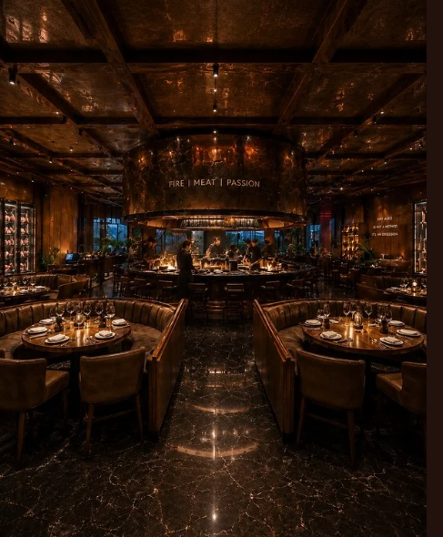
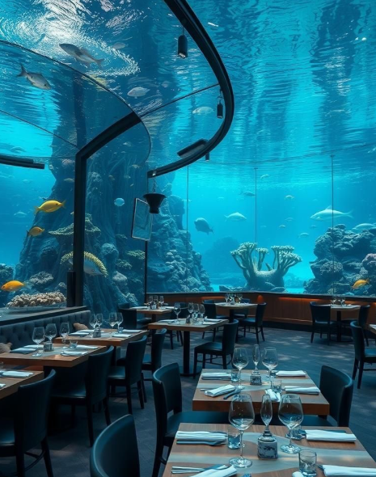

The Flavors of Valléora
Explore our exquisite culinary offerings.
Our Restaurants

The Chef's Flavor
Fine dining featuring fresh, seasonal ingredients. An unforgettable culinary experience where every dish is a work of art designed to delight your senses. Enjoy an elegant atmosphere and exceptional service.
Hours: 7:00 PM - 11:00 PM
Atmosphere: Elegant and sophisticated.
Local Roots
Traditional regional dishes with a modern twist. Authentic flavors that pay tribute to our roots, prepared with the freshest ingredients. A welcoming place, perfect for sharing memorable moments.
Hours: 12:00 PM - 4:00 PM | 7:00 PM - 10:00 PM
Atmosphere: Warm and family-friendly.


The Banquet
A wide variety of international dishes in a casual and lively atmosphere. Ideal for families and groups, we offer an extensive buffet with options for every taste. A true celebration of flavors!
Hours: Breakfast: 7:00 AM - 10:30 AM | Lunch: 1:00 PM - 3:30 PM | Dinner: 7:00 PM - 10:30 PM
Atmosphere: Relaxed, with something for everyone.